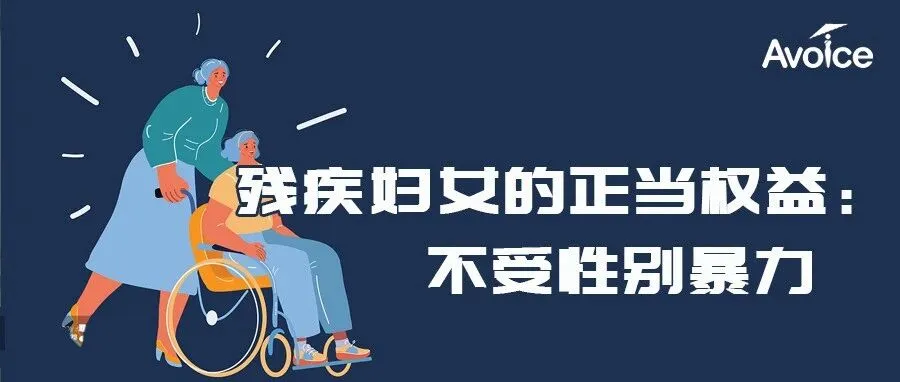
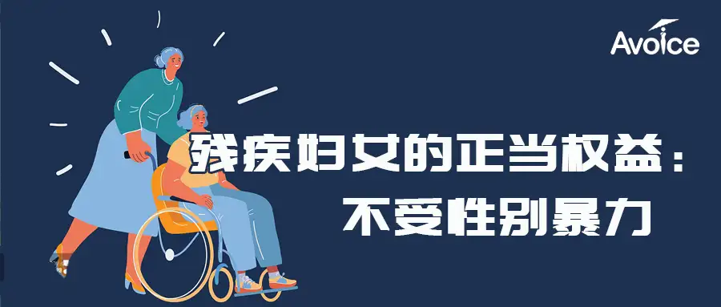
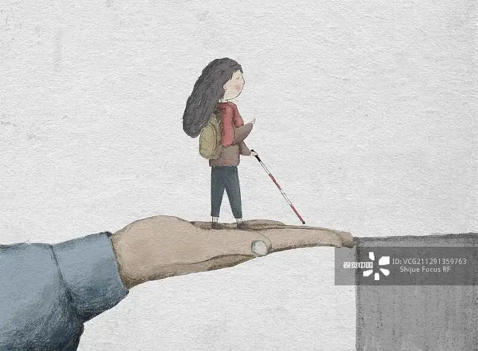
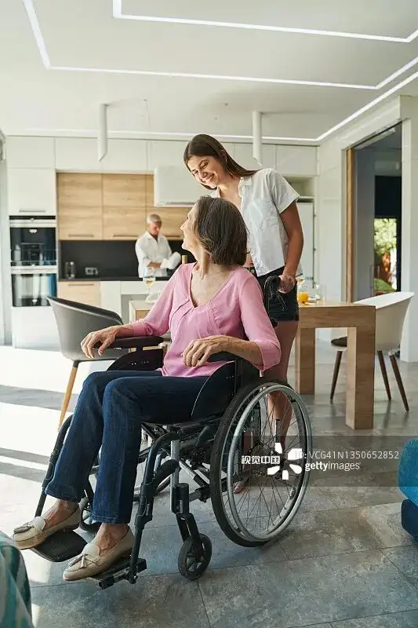
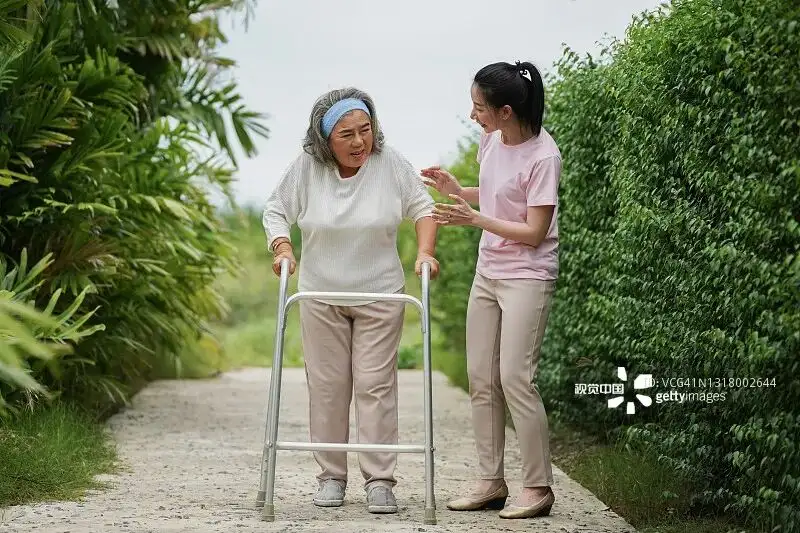

引言：
全世界妇女中，有五分之一的人在忍受各种各样的残疾，而她们在各个领域遭受性别暴力的几率是非残疾妇女的两到三倍，并且可能遭受更长期、更严重的性别暴力——残疾妇女既遭受与普通妇女相同形式的暴力，也遭受着针对残疾的特殊形式的暴力。显而易见，残疾妇女会在寻求庇护、诉求正义的路上遇到非常多的阻碍。然而，目前有关于性别暴力的法律政策和方案却很少涉及残疾妇女所面对的具体困境。在统计方面，也很难按照性别和残疾的分类搜集到准确全面的数据。
目录 CONTENT
一、侵害残疾妇女的性别暴力
什么是性别暴力？
残疾妇女遭受暴力的形式
终止暴力所面临的障碍
诉诸司法的障碍
残疾妇女获取法律援助的途径
二、免于性别暴力是所有残疾妇女的正当权利
政府在有关性别暴力方面的义务
三、保障残疾妇女免受性别暴力
一
侵害残疾妇女的性别暴力

什么是性别暴力？
世界卫生组织将针对妇女的暴力定义为“任何基于性别的，无论发生在公众或私人场合的，导致或可能导致妇女遭受身体、性或者精神伤害的暴力行为，其包括威胁实施暴力行为、胁迫或任意剥夺自由。” 性别暴力有多种形式：身体的、情感的、心理的、经济的，并且暴力的实施对象包括亲密伴侣、家庭成员、保姆、医疗等其他服务人员、执法者、军事人员、教育者、雇主和陌生人等。
残疾妇女遭受暴力的形式
残疾妇女与非残疾妇女一样，遭受着各种形式的性别暴力，如亲密关系暴力、家庭暴力、性暴力和性骚扰。
残疾妇女还因残疾遭受特殊的性暴力，如医护人员的性虐待，扣留药物或辅助设备，故意不按规定护理，拒绝提供食物、上厕所或梳洗所用必需品，控制感官设备，财务控制，限制通信设备，对残疾人的“处女强暴”（部分人们相信，与处女发生性关系可以治愈男人所患的艾滋病或其他性传播疾病。这些人坚信非健全女性对性的需求并不积极，所以具有某种某种净化不洁事物的能力，因而对残疾女性实施强暴），护理机构的长期暴力，以及强制性禁闭。
残疾女性还不成比例地经历了更多其他妇女所经历的特定形式暴力，如强迫开展医疗程序，尤其是强制绝育、避孕和堕胎。
监护人制度和其他正式或非正式代理机制可以剥夺残疾妇女法定权益和决策权，将她们置于更多性别暴力的危机之中。剥夺残疾妇女的决策权可能使她们更加依赖施暴者，并更易遭受强迫性医疗手段的伤害。
属于（或被认为属于）其他群体的残疾妇女更容易遭受歧视和暴力侵害，如移民、少数族裔、土著人、LGBT+、老年或青少年群体的残疾女性可能会经历形式更为复杂的性别暴力。
终止暴力所面临的障碍
-
残疾妇女可能会因为情感、经济或者身体上产生的依赖，从而害怕离开或举报施暴者。对于施暴者的依赖来源于一种封闭的环境，如低就业率、较低的教育水平、以及社会对残疾妇女普遍的歧视。
残疾女性可能会担心若举报受虐者，她们可能遭到报复、被送进收容所、失去辅助设备等，或失去监护权。
残疾女性常无法使用紧急庇护所或其他紧急居住空间，且不会被另外提供合适的居所。更有甚者，残疾女性直接被从帮扶对象名列中剔除。 此外，这些有关紧急居所的信息也很少以其他形式提供给残疾女性。
庇护所可能有“禁止携带动物”的规定，这对依赖导盲犬等服务性动物的残疾妇女来说是一种障碍。
服务提供者（包括社会工作者和卫生保健工作者）常常缺乏必要的培训，从而无法真正向经历过性别暴力的残疾妇女提供援助。
服务提供者可能误认为残疾人不会有性生活，或不会有亲密关系对象，因此无法发觉家庭暴力或性暴力现象。

诉诸司法的障碍
警察局可能缺乏必要的设施以保障残疾人能够与警方进行充分的沟通，残疾人女性也可能缺乏前往警察局的物质条件。
有关法律权益的信息往往没有替代形式（如盲文、普通语言或文本转语音）。这可能会妨碍采集女性充分了解自身权益并在法律允许的最大范围内提出申诉。
残疾妇女可能担心在举报家庭暴力后后失去对子女的监护权——法院可能会执行歧视性的刻板规定，即认定非残疾的一方为更有能力的监护人。
警察、司法机构和公众可能认为残疾妇女证人不如其他人可信，而且在某些情况下，被剥夺了法律能力的残疾妇女可能被禁止出庭作证。
对残疾妇女施暴事件的唯一或主要证人很可能就是残疾妇女本人，增加了残疾妇女举报暴力或在法庭上作证的困难。
对暴力侵害残疾妇女的人网开一面会鼓舞施暴者继续犯罪。因为他们深谙司法系统不会严肃处理这些举报，便会有恃无恐。
残疾妇女获取法律援助的途径
残疾妇女在遭遇性别暴力后，有权利寻求并获得法律援助。为确保这一点，残疾妇女必须保证获取法律援助的渠道。这意味着：
执法部门、司法部门以及其他参与司法的行为者必须接受培训，以人事和应对针对残疾妇女的性别暴力。此外，律师也必须接受针对性培训以接受残疾妇女的委托。
为保证残疾妇女获取信息的权益，必须以多种形式提供关于获取保护令和其他法律权利的信息。
各国必须承认残疾妇女的法律能力，并对其证词给予同等程度的重视。
残疾妇女必须有获取必要法律支持的机会，以便了解和参与司法程序。
在残疾妇女将性别暴力诉诸司法时，一定要使她们免于被送进精神病院或失去子女监护权的忧虑。
必须保证残疾妇女能够便利地到达警察局和法院（包括证人席）。
二
免于性别暴力
是所有残疾妇女的正当权利

一些国际和区域人权条约保护了一系列残疾女性的基本权利，包括《残疾人权利公约》（CRPD）和《消除一切形式对妇女的歧视公约》（CEDAW）。其中，明确了残疾妇女具有不受性别暴力的权利。这些权利包括：
不受性别暴力
生命
自由与人身安全
平等与不受歧视
可及性
免于酷刑、不人道或有辱人格的待遇与处罚
（虐待、暴力、剥削的幸存者）恢复身心健康并重新融入社会
婚姻自由与平等
免于有害习俗
法律面前人人平等
适足的生活水平与社会保障
（遭遇危险时）人身保护
独立生活并融入社区
政府在有关性别暴力方面的义务
根据过国际法，各国政府有义务尊重、保护并实现残疾妇女不受性别暴力的权利。政府必须：
尊重
这项义务要求国家，包括任何国家行为者，不实施任何性别暴力。国家必须制定法律法规以防止性别暴力。如确保在法律和执法中，禁止在没有残疾妇女同意的情况下绝育或堕胎。
保护
这项义务要求国家尽职尽责，保护残疾妇女免受私人性别暴力。
落实
这项义务要求国家采取实际措施，确保残疾妇女过上没有性别暴力的生活。如：确保残疾妇女能够获取保护性服务并培训其服务者，从而提供具有包容性的残疾服务。
在国家有直接责任消除任何国家行为者实施的性别暴力的同时，如政府官员、军人或法律工作者，国家也必须尽职尽责预防和处理私人性别暴力事件。这就要求各国通过颁布法律政策来解决性别暴力问题，同时还要：
预防
这要求各国为性别暴力受害者提供充分、及时、可获取的服务，以防止伤害再次发生。
调查、起诉并惩处
这要求各国确保认真对待暴力侵害残疾妇女的指控，并采取一切措施，充分调查和处理暴力侵害残疾妇女的行为。此外，各国也要确保施加与暴力侵害严重程度相符合的惩罚。
补救
这要求各国对暴力经历采取整体性应对措施，运用一切资源促进受性别暴力的残疾人的身体、认知和心理健康，并帮助他们重返社会。
三
保障残疾妇女免受性别暴力
残疾妇女必须过上免于性别暴力的生活。
法律、政策和相关方案必须认定并应对残疾妇女面临的具体的、多种形式的性别暴力。此外，各国应让残疾妇女参与其设计、实施和监测。各国还应收集关于暴力侵害残疾妇女事件的分类数据，从而为制定更具针对性的政策和方案提供信息支撑。
反对针对残疾女性性别暴力的活动必须重视并反对那些针对残疾妇女的迷信、污名和刻板印象。
为了识别并应对残疾妇女受暴力侵害的情况，执法部门、司法部门、医护人员和其他工作人员必须接受培训。
必须向残疾妇女提供保健和庇护所服务，并使其对残疾妇女无障碍。同时，必须以多种形式提供这些服务的联系方式，保证残疾妇女可以使用。
原文作者：
Women Enabled International
原文标题：
The Right of Women and Girls with Disabilities
to be Free From Gender-based Violence
原文链接：
https://womenenabled.org/fact-sheets/#thematic2
翻译 I 方梓奕
审校 I 方唐多多 Laurel
推文排版 I 官晓娜
图片来源｜pexels.com